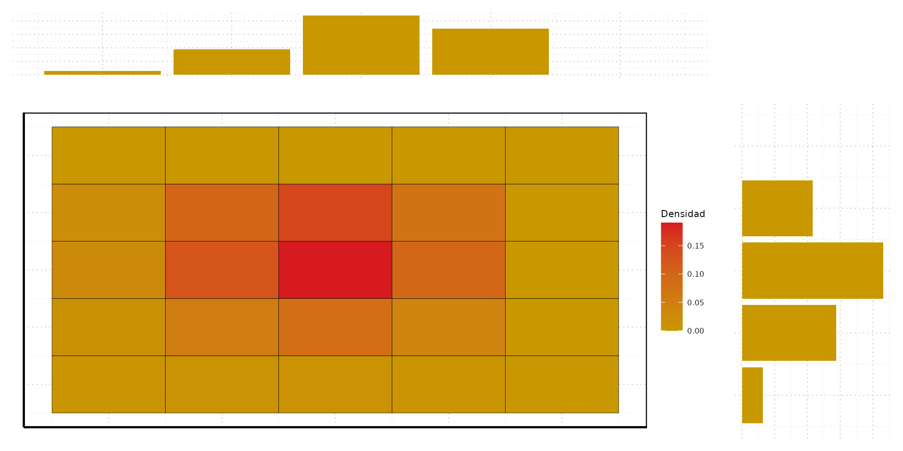
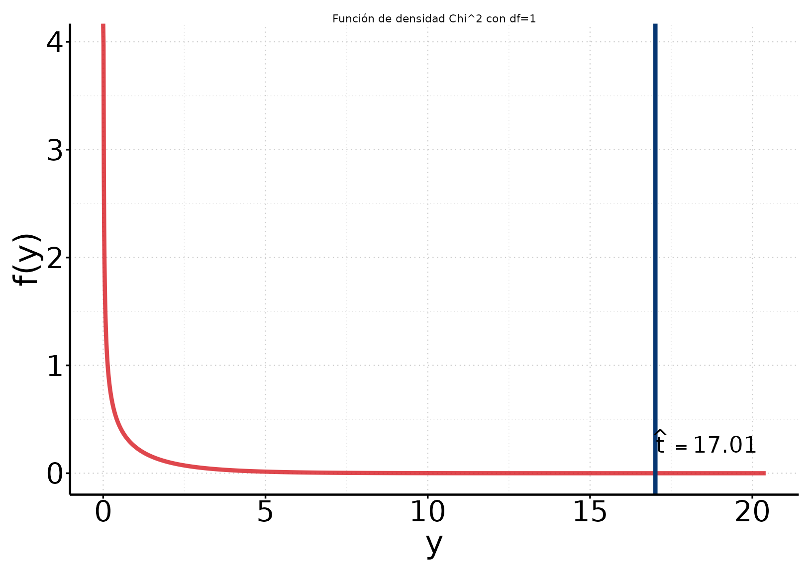

# A tibble: 8 × 8
bikers temp hum windspeed workingday weathersit hr demanda
<dbl> <dbl> <dbl> <dbl> <dbl> <fct> <fct> <chr>
1 16 0.240 0.810 0 0 clear 0 baja
2 40 0.220 0.800 0 0 clear 1 baja
3 32 0.220 0.800 0 0 clear 2 baja
4 13 0.240 0.750 0 0 clear 3 baja
5 1 0.240 0.750 0 0 clear 4 baja
6 1 0.240 0.750 0.090 0 cloudy/misty 5 baja
7 2 0.220 0.800 0 0 clear 6 baja
8 3 0.200 0.860 0 0 clear 7 baja Análisis de Datos Categóricos (SOC3070)
Tablas de Contingencia
Mauricio Bucca · Sociología UC
2026-07-23
Antes · Hoy · Después
Antes
valor esperado, varianza y máxima verosimilitud.
Hoy
tablas de contingencia, asociación e independencia.
Después
regresión lineal para outcomes categóricos.
Tablas de Contingencia
Datos de demanda de bicicletas, ejemplo
- Usaremos datos del sistema de bicicletas compartidas Capital Bikeshare (Washington DC, 2011–2012).
- 8.645 observaciones horarias. Para cada hora observamos el número de arriendos (
bikers) y covariables como temperatura, humedad, situación climática, hora del día, día de la semana y feriados.
Datos de demanda de bicicletas, ejemplo
Si estuviéramos interesados en estudiar la asociación entre el tipo de día (hábil vs. no hábil) y el nivel de demanda (alta vs. baja), el primer paso probablemente sería construir una tabla de este tipo:
Este tipo de tablas se denomina tablas de contingencia.
Tablas de contingencia
Una definición formal: una tabla de contingencia es una matriz que muestra la distribución multivariada de frecuencias de un número arbitrario de variables categóricas.
Caso simple:
- X y Y son dos variables categóricas.
- X tiene I categorías \{i, \dots, I \}
- Y tiene J categorías \{j, \dots, J \}.
Una tabla rectangular que clasifica todas las combinaciones posibles de X y Y tendrá I filas para las categorías de X, J columnas para las categorías de Y, y I \times J celdas.
Tablas de contingencia
- Una tabla que clasifica n variables se denomina una tabla n-way
- Una tabla con I filas y J columnas se denomina una I \times J (léase I-por-J)
Por ejemplo, la tabla en nuestro ejemplo es una tabla 2-way, 2-por-2
demanda
dia alta baja
hábil 1397 4514
no hábil 759 1975- Una tabla de contingencia n_{ij} (frecuencia conjunta) denota la frecuencia observada en la celda i,j, es decir, el número de casos presentes en la combinación X=i \text{ y } Y=j
- Usando la notación matricial i indexa las filas y j las columnas.
Distribución conjunta y marginal de frecuencias
Estructura general de una tabla 2-way, I \times J
| Y=y_{1} | Y=y_{2} | \dots | Y=y_{J} | Total | |
|---|---|---|---|---|---|
| X=x_{1} | n_{11} | n_{12} | \dots | n_{1J} | n_{1+} |
| X=x_{2} | n_{21} | n_{22} | \dots | n_{2J} | n_{2+} |
| \dots | \dots | \dots | \dots | \dots | \dots |
| X=x_{I} | n_{I1} | n_{I2} | \dots | n_{IJ} | n_{I+} |
| Total | n_{+1} | n_{+2} | \dots | n_{+J} | n_{++} |
Estructura probabilística
Distribución conjunta
Supongamos que elegimos al azar un individuo de nuestra población. ¿Cual es la probabilidad de que pertenezca una celda dada de la tabla de contingencia?
Para cada frecuencia conjunta n_{ij} en la tabla existe una probabilidad conjunta asociada p_{ij}, tal que p_{ij} = \mathbb{P}(X = i, Y = j) - denota la probabilidad de que una observación muestreada al azar pertenezca a la celda (i,j). - la colección de probabilidades p_{ij} forma la distribución conjunta de X y Y, f(x,y).
Estimación
Cuando trabajamos con muestras, esta probabilidad se puede estimar (MLE) a partir de las frecuencias en la tabla: \hat{p}_{ij} = \frac{n_{ij}}{n}
Distribución conjunta
En nuestro ejemplo,
demanda
dia alta baja
hábil 0.162 0.522
no hábil 0.088 0.229Como con cualquier distribución de probabilidad, sabemos que los p_{ij} suman a 1.
Veamos en el caso de nuestro estimador: Si \hat{p}_{ij} = \frac{n_{ij}}{n}, entonces \sum_{i} \sum_{j} \frac{n_{ij}}{n} = \frac{n}{n} = 1
Distribuciones marginales
Podemos obtener la distribución marginal de las variables X y Y a partir de su distribución conjunta.
- La distribución marginal de X (filas) está dada por:
p_{i+} = \sum_{j} p_{ij}
- La distribución marginal de Y (columnas) está dada por:
p_{+j} = \sum_{i} p_{ij}
Distribuciones marginales
Cuando trabajamos con una muestra podemos estimar las distribuciones marginales a partir de las proporciones muestrales.
demanda
dia alta baja
hábil 0.162 0.522
no hábil 0.088 0.229Como toda distribución de probabilidad, suma a 1.
Distribución conjunta y marginal de probabilidades
En resumen,
| Y=y_{1} | Y=y_{2} | \dots | Y=y_{J} | Total | |
|---|---|---|---|---|---|
| X=x_{1} | p_{11} | p_{12} | \dots | p_{1J} | p_{1+} |
| X=x_{2} | p_{21} | p_{22} | \dots | p_{2J} | p_{2+} |
| \dots | \dots | \dots | \dots | \dots | \dots |
| X=x_{I} | p_{I1} | p_{I2} | \dots | p_{IJ} | p_{I+} |
| Total | p_{+1} | p_{+2} | \dots | p_{+J} | 1 |
Estructura general de probabilidades en una tabla 2-way, I \times J
Distribucion conjunta y marginales

Distribuciones condicionales
- Recuerden que \mathbb{P}(Y=y \mid X=x) es la probabilidad de que la variable Y tome valor y si X toma valor x.
- La distribución condicional f(y \mid x) es una función que expresa la probabilidad que Y tome cada uno de sus posibles valores y’s para X fijo en cada uno de sus valores posibles x’s.
Por tanto,
- En una tabla de contingencia podemos construir las distribuciones condicionales de las variables X (o Y) fijando la otra variable en sus diferentes niveles.
- Normalmente nos referimos como la “variable independiente” a la variable que usamos para condicionar, mientras que la otra variable actúa como “variable dependiente”.
Distribuciones condicionales
En nuestro ejemplo podemos construir la distribución condicional de la variable demanda dado dia usando la fórmula general para probabilidades condicionales:
demanda
dia alta baja
hábil 1397 4514
no hábil 759 1975\begin{align} \mathbb{P}( \text{demanda}=j | \text{ día}=i ) &= \frac{\mathbb{P}(\text{demanda}=j , \text{ día}=i )}{\mathbb{P}(\text{ día}=i)} \end{align}
Distribuciones condicionales
Sustituyendo las probabilidades de la ecuación por sus respectivos estimadores podemos estimar las distribuciones condicionales en la tabla:
demanda
dia alta baja
hábil 1397 4514
no hábil 759 1975\begin{align} \hat{p}_{j | i} &= \frac{P(\text{demanda}=j , \text{ día}=i )}{P(\text{ día}=i)} \\ \\ &= \frac{\frac{n_{ij}}{n}}{\frac{\sum_{j} n_{ij}}{n}} = \frac{n_{ij}}{\sum_{j}n_{ij}} \end{align}
Distribuciones condicionales
Sustituyendo las probabilidades de la ecuación por sus respectivos estimadores podemos estimar las distribuciones condicionales en la tabla:
demanda
dia alta baja
hábil 1397 4514
no hábil 759 1975Por ejemplo, la probabilidad condicional de tener alta demanda dado que el día es hábil se estima de la siguiente manera:
\begin{align} \hat{p}_{ \text{alta} | \text{hábil}} & = \frac{n_{11}}{\sum_{j}n_{1j}} \\ \\ &= \frac{1397.000}{1397.000 + 4514.000} = 0.236 \end{align}
Distribuciones condicionales
Sustituyendo las probabilidades de la ecuación por sus respectivos estimadores podemos estimar las distribuciones condicionales en la tabla:
demanda
dia alta baja
hábil 1397 4514
no hábil 759 1975En términos más generales, la distribución condicional de la variable demanda, dado dia se estima del siguiente modo:
demanda
dia alta baja
hábil 0.236 0.764
no hábil 0.278 0.722Una advertencia: Paradoja de Simpson
Lo anterior implica algo incómodo: la asociación marginal entre dos variables puede ser distinta —incluso de signo opuesto— a la asociación condicional dentro de subgrupos.
Ejemplo clásico: en la demanda judicial contra UC Berkeley (1973), los datos agregados mostraban una tasa de admisión menor para mujeres que para hombres. Al condicionar por carrera, la mayoría de las carreras individualmente favorecía levemente a las mujeres — el patrón se revertía porque ellas postulaban más a carreras con tasas de admisión generales más bajas.
La lección para nuestra tabla dia × demanda: si existiera una tercera variable (p. ej. mes) correlacionada con ambas, la asociación marginal que acabamos de medir podría no reflejar el patrón dentro de cada mes. Es el mismo problema que motiva controlar por covariables en un modelo de regresión.
Independencia estadística
- Recuerden, dos variables X y Y son independientes si al saber algo sobre X no aprendemos nada sobre Y, y viceversa: \mathbb{P}(Y|X) = \mathbb{P}(Y).
- Check: X \bot Y \iff \mathbb{P}(X,Y) = \mathbb{P}(X)\mathbb{P}(Y)
Ejercicio rápido: Supongamos que el 70% de las horas son de días hábiles, y el 25% son de alta demanda. Si la alta demanda fuera independiente del tipo de día, ¿cuál sería la probabilidad de que, al elegir una hora al azar, encontremos una de día hábil y alta demanda?
Respuesta: \mathbb{P}(\text{alta},\text{hábil}) = \mathbb{P}(\text{alta})\mathbb{P}(\text{hábil}) = 0.25 \times 0.70 = 0.175
Independencia estadística
Podemos usar esta propiedad para comprobar independencia en una tabla de contingencia.
- Si X \bot Y las probabilidades conjuntas esperadas bajo el supuesto de independencia están dadas por: \tilde{p}_{ij} = p_{i+} \times p_{+j}
- Asimismo, las frecuencias esperadas bajo independencia están dadas por: \tilde{n}_{ij} = n \times p_{i+} \times p_{+j}
Importante: noten que sólo necesitamos saber la distribución marginal de las variables para calcular las probabilidades y frecuencias esperadas bajo independencia.
Independencia estadística
Distribución conjunta observada
demanda
dia alta baja
hábil 0.162 0.522
no hábil 0.088 0.229Distribuciones marginales
hábil no hábil
0.684 0.316 alta baja
0.249 0.751 Distribución conjunta esperada bajo independencia
alta baja
[1,] 0.171 0.513
[2,] 0.079 0.237Test \chi^{2} de indepencia estadística
Test \chi^{2} de indepencia estadística
Primer paso, testear que exista algo de asociación: ¿son estas tablas suficientemente distintas?
Frecuencias observadas
demanda
dia alta baja
hábil 1397 4514
no hábil 759 1975Frecuencias esperadas bajo independencia
alta baja
hábil 1474.200 4437
no hábil 681.800 2052Donde cada frecuencia esperada bajo independencia está dada por: \tilde{n}_{ij} = n \times \hat{p}_{i+} \times \hat{p}_{+j}
- El test Pearson \chi^{2} ( t ) mide el grado asociación en la tabla de la siguiente manera:
t =\sum_{\text{all k: } i,j} \frac{(n_{ij} - \tilde{n}_{ij})^{2}}{\tilde{n}_{ij}}
Un valor alto de t sugiere que las variables no son independientes.
Pero, ¿cuánto es “alto”?
Test \chi^{2} de indepencia estadística
Nota:
- Si Z_{1}, \dots , Z_{k} son variables independientes y cada Z \sim \text{Normal}(0,1),
- Entonces la variable Y = \sum_{k} Z^{2} \sim \chi^{2}_{k}. Y distribuye \chi^{2} con k grados de libertad.
Heuristica:
- t =\sum_{\text{all k: } i,j} \frac{(n_{ij} - \tilde{n}_{ij})^{2}}{\tilde{n}_{ij}}
- Si no hay asociación entre las variables ( H_{0} es verdadera ) entonces: t =\sum_{\text{all k: } i,j} \frac{(\text{algo cercano a cero})^{2}}{\tilde{n}_{ij}}
Pearson demostró que si H_{0} es veradera, entonces: t \sim \chi_{df}^{2}, \quad \text{ donde } \quad df= (I-1)(J-1)
Test \chi^{2} de indepencia estadística
p-value:
\mathbb{P}(t > \hat{t} \mid H_{0})
equivalente a:
\mathbb{P}(\chi_{df}^{2} > \hat{t})
Test \chi^{2} de indepencia estadística
Frecuencias observadas
demanda
dia alta baja
hábil 1397 4514
no hábil 759 1975Frecuencias esperadas bajo independencia
alta baja
hábil 1474.200 4437
no hábil 681.800 2052(O-E)^2/E
demanda
dia alta baja
hábil 4.039 1.342
no hábil 8.732 2.901Test Chi-2 : ∑ (O-E)^2/E
[1] 17.010Test \chi^{2} de indepencia estadística

Para ser claros: Si la hipótesis de independencia ( H_{0} ) es cierta, nuestro test t distribuye \chi^{2} con df= (I-1)(J-1)=1
p-value \mathbb{P}(\chi_{df=1}^{2} \geq \hat{t} )
[1] 0.000Test \chi^{2} de indepencia estadística

Para ser claros: Si la hipótesis de independencia ( H_{0} ) es cierta, nuestro \text{test } \chi^{2} distribuye \chi^{2} con df= (I-1)(J-1)=1
p-value \mathbb{P}(\chi_{df=1}^{2} \geq \hat{t})
[1] 0.000
Pearson's Chi-squared test
data: ctable
X-squared = 17, df = 1, p-value = 0.000Conclusión: con 8.645 observaciones, el valor obtenido en nuestro test es extremadamente improbable bajo independencia (p-value \approx 0). Tenemos evidencia fuerte de que el tipo de día y el nivel de demanda están asociados.
Medidas de Asociación
Asociación en tablas de contingencia
Las variables de una tabla de contingencia están asociadas si la distribución condicional de las variables es distinta de su distribución marginal. Formalmente,
f_{Y \mid X}(Y \mid X) \neq f_{Y}(Y) y por tanto,
f_{X \mid Y}(X \mid Y) \neq f_{X}(X)
Asociación en tablas de contingencia
Continuando con nuestro ejemplo,
f(\text{demanda} \mid \text{dia})
demanda
dia alta baja
hábil 0.236 0.764
no hábil 0.278 0.722f(\text{demanda})
alta baja
0.249 0.751 Al parecer, las horas de días hábiles tienen una probabilidad distinta de alta demanda que las de días no hábiles. En lo que sigue vamos a usar este ejemplo para estudiar:
- Diferentes formas de cuantificar la asociación (o la ausencia de la misma) entre variables de una tabla de contingencia
- Evaluar si las diferencias observadas son o no más sustanciales de lo se esperaría debido al mero azar.
Medidas de Asociación
Diferencia de proporciones
Diferencia de proporciones
- Supongamos que tenemos una tabla de contingencia 2-ways que cruza las variables binarias X (independiente) y Y (dependiente). Éxito se codifica con valor 1 y el fracaso con el valor 0.
- Para detectar la asociación necesitamos medir diferencias en la distribución de Y condicional en X
La diferencia de proporciones cuantifica estas diferencias de la siguiente manera: \delta = \mathbb{P}(Y=1 \mid X=1) - \mathbb{P}(Y=1 \mid X=0)
Noten que \delta \in [-1,1] donde \delta=0 indica proporciones iguales.
Volviendo a nuestro ejemplo, llamemos \hat{p}_{H} a la proporción de horas de alta demanda en días hábiles y \hat{p}_{NH} a la proporción de alta demanda en días no hábiles. La diferencia de proporciones se define simplemente como:
\begin{align} \hat{\delta} &= \hat{p}_{H} - \hat{p}_{NH} \\ \\ &= 0.236 - 0.278 \\ \\ &= -0.041 \end{align}
Diferencia de proporciones
Dos consideraciones importantes:
- La diferencia de proporciones debe estar adecuadamente definida en términos de una variable dependiente y otra independiente. La razón es que, en general: \mathbb{P}(Y=1 \mid X=1) - \mathbb{P}(Y=1 \mid X=0) \neq \mathbb{P}(X=1 \mid Y=1) - \mathbb{P}(X=1 \mid Y=0)
En nuestro ejemplo:
demanda
dia alta baja
hábil 0.648 0.696
no hábil 0.352 0.304Si tratamos el tipo de día como variable dependiente y definimos “día hábil” como la categoría de éxito, la diferencia en las proporciones es \delta = -0.048.
Diferencia de proporciones
- La diferencia de proporciones es una estadística intuitiva y fácil de interpretar, pero por sí sola puede ser engañosa cuando las proporciones son ambas cercanas a cero. Consideremos los dos casos hipotéticos siguientes:
\begin{align} \text{Caso 1: } p_{1a}=0.410 \text{ and } p_{1b}=0.401 \\ \\ \text{aquí: } \delta_{1} = 0.009 \end{align}
y
\begin{align} \text{Caso 2: } p_{2a}=0.010 \text{ and } p_{2b}=0.001 \\ \\ \text{aquí: } \delta_{2} = 0.009 \end{align}
¿Problemas? En el caso 1 ambas porciones son, según todos los indicios, casi idénticas. En el caso 2, sin embargo, ambas proporciones son similares en términos absolutos, por muy diferentes en términos relativos: 0.010 es 10 veces mayor 0.001.
Medidas de Asociación
Odds Ratio
Odds Ratio
- Odds ratio ( \theta ) es una medida fundamental de asociación.
- Parámetro de interés en el modelo más importante de datos categóricos: regresión logística.
- \theta está formulada para tablas de 2-por-2, pero también puede calcularse para tablas de mayor dimensión:
- Toda tabla n-ways, I \times J, puede ser re-escrita como (I-1) \times (J-1) \times (n-1) tablas de 2-por-2.
Odds
La Odds Ratio es el ratio de dos “odds”, donde las “odds” una variable binaria Y se definen como:
\begin{align} \text{odds} &= \frac{\mathbb{P}(Y=1)}{1-\mathbb{P}(Y=1)} \\ \\ &= \frac{p}{1-p} \end{align}
Por ejemplo, si Y tiene una probabilidad de éxito p=0.75, las odds de éxito son \text{odds}=\frac{0.75}{0.25} = 3
- Esto significa que las “chances” de éxito son 3:1
Odds
las Odds son funciones de probabilidades y, por lo tanto, las probabilidades también pueden expresarse en función de las odds. Formalmente:
p = \frac{\text{odds}}{1 + \text{odds}}
Siguiendo con ejemplo anterior, si sabemos que las odds de éxito son igual a 3, entonces la probabilidad p de éxito es:
\begin{align} p &= \frac{3}{1 + 3} \\ \\ &= 0.75 \end{align}
Odds Ratio
Las odds resumen la distribución de una sola variable binaria. Para medir la asociación entre dos de estas variables en una tabla podemos calcular la odds ratio.
Si X e Y son las variables binarias – independiente y dependiente – la distribución condicional f(Y \mid X) se puede resumir con dos odds:
\begin{align} \text{odds}_{0} &= \frac{\mathbb{P}(Y=1 | X=0) }{1 - \mathbb{P}(Y=1 | X=0) } \quad \text{y} \\ \\ \text{odds}_{1} &= \frac{\mathbb{P}(Y=1 | X=1) }{1 - \mathbb{P}(Y=1 | X=1) } \end{align}
La odds ratio, por tanto, es:
\begin{align} \theta &= \frac{\text{odds}_{1}}{\text{odds}_{0}} \\ \\\ \end{align}\end{align}
Odds Ratio
Volviendo a nuestro ejemplo,
demanda
dia alta baja
hábil 0.236 0.764
no hábil 0.278 0.722Si \hat{p}_{H} es la proporción de alta demanda en días hábiles y \hat{p}_{NH} la proporción de alta demanda en días no hábiles.
\begin{align} \hat{\theta} = \frac{\text{odds}_{H}}{\text{odds}_{NH}} &= \frac{\hat{p}_{H}/(1 - \hat{p}_{H})}{\hat{p}_{NH}/(1 - \hat{p}_{NH})} \\ \\ &= \frac{0.236/0.764}{0.278/0.722} \\ \\ &= 0.805 \end{align}
Odds Ratio
Dado que estas proporciones se estiman a partir de los recuentos de la tabla, \hat{\theta} también puede expresarse de la siguiente manera, denominada cross-product ratio. En nuestro ejemplo,
demanda
dia alta baja
hábil 1397 4514
no hábil 759 1975\begin{align} \hat{\theta} &= \frac{\hat{p}_{H}/(1 - \hat{p}_{H})}{\hat{p}_{M}/(1 - \hat{p}_{M})} \\ \\ &= \frac{\frac{n_{21}}{n_{2+}} / \frac{n_{22}}{n_{2+}}}{\frac{n_{11}}{n_{1+}}/ \frac{n_{12}}{n_{1+} }} = \frac{n_{21}/n_{22}}{n_{11}/n_{12}} \\ \\ &= \frac{n_{21} \times n_{12}}{n_{22} \times n_{11}} \\ \\ \end{align}
[1] 0.805Odds Ratio
[1] 0.805Interpretación: las odds de alta demanda en un día hábil son 0.805 veces las de un día no hábil. Notice that:
- \theta \in [0,\infty+]
- \theta=1 indica igualdad de odds y, por lo tanto, independencia
- \theta > 1 indica que el éxito es más probable para el grupo en el numerador (días hábiles en este caso)
- \theta < 1 indica que el éxito es más probable para el grupo en el denominador (días no hábiles en este caso)
- Valores lejos de 1, en cualquier dirección, representan una fuerte evidencia contra independencia
Propiedades de la Odds Ratio
- Invirtiendo el orden de las filas o columnas obtenemos el inverso la odds ratio original.
demanda
dia alta baja
hábil 0.236 0.764
no hábil 0.278 0.722Si \hat{p}_{H} es la proporción de alta demanda en días hábiles y \hat{p}_{NH} en días no hábiles.
\begin{align} \hat{\theta}_{H,NH} &= \frac{\hat{p}_{H}/(1 - \hat{p}_{H})}{\hat{p}_{NH}/(1 - \hat{p}_{NH})} \\ \\ &= 0.805 \end{align}
\begin{align} \hat{\theta}_{NH,H} &= \frac{\hat{p}_{NH}/(1 - \hat{p}_{NH})}{\hat{p}_{H}/(1 - \hat{p}_{H})} \\ \\ &= 1.242 \end{align}
Tanto \theta como 1/\theta expresan el mismo grado de asociación.
Propiedades de la Odds Ratio
- A diferencia de las otras medidas, la odds ratio no varia en función de que variable actúa como dependiente e independiente. En otras palabras, no es necesario identificar una variable independiente para estimar correctamente \theta
En nuestro ejemplo, tomando el tipo de día como variable dependiente, donde \hat{p}_{A} es la probabilidad de que sea un día hábil entre las horas de alta demanda y \hat{p}_{B} es la misma probabilidad entre las horas de baja demanda, la odds ratio de “día hábil” es:
demanda
dia alta baja
hábil 0.648 0.696
no hábil 0.352 0.304\begin{align} \hat{\theta} &= \frac{\hat{p}_{A}/(1 - \hat{p}_{A})}{\hat{p}_{B}/(1 - \hat{p}_{B})} \\ \\ &= 0.805 \end{align}
Propiedades de la Odds Ratio
- La Odds Ratio es margins-free: la odds ratio de una tabla de contingencia no se ven alteradas por el “escalamiento” (multiplicación por una constante) de filas o columnas.
Movilidad educacional 1980
Hijos: NU Hijos: U
Padre: NU 160 20
Padres: U 20 20Movilidad educacional 2020
Hijos: NU Hijos: U
Padre: NU 160 80
Padres: U 20 80- El 13% de los hijos padres sin estudios universitarios obtenía un grado universitario
- El 33% de los hijos padres sin estudios universitarios obtiene un grado universitario
- Diferencia de proporciones: 0.33 - 0.13 = 0.2
Ejemplo de interpretación apresurada: “La movilidad educacional casi se triplicó y, por tanto, la desigualdad de oportunidades dejó de ser un problema.”
Correcto?
Propiedades de la Odds Ratio
una verdad parcial: el resultado refleja un cambio en la distribución marginal de educación de los hijos, no un cambio en la asociación de las variables.
Concretamente, se cuaduplicó la cantidad de gente que termina la universidad, independiente de su origen.
Movilidad educacional 1980
Hijos: NU Hijos: U
Padre: NU 160 20
Padres: U 20 20Movilidad educacional 2020
Hijos: NU Hijos: U
Padre: NU 160 80
Padres: U 20 80La odds ratio es “inmune a cambios” en la distribución marginal de las variables, capturando sólo la asociación neta entre ellas (“margin-free association”)
\hat{\theta}_{1980} = \frac{160 \times 20}{20 \times 20} = 8
\hat{\theta}_{2020} = \frac{160 \times 80}{20 \times 80} = \frac{160 \times (4 \times 20)}{20 \times (4 \times 20)} = 8
Log Odds Ratio
Como sabemos, \theta \in [0,\infty+). Esto crea un problema tanto para la interpretación como para la inferencia estadística. Por ejemplo:
- Supongamos que la odds ratio (día hábil a no hábil) de alta demanda es \theta = 20.
- Por ende, la odds ratio (no hábil a día hábil) de alta demanda es \theta^{*} = 1/ \theta = 0.05.
- Ambos resultados indican el mismo nivel de asociación, pero uno parece mucho más grande que el otro.
Transformando \theta a escala logarítmica permite mapear [0,\infty+) \to (-\infty,\infty+), creando una medida de asociación simétrica.
\begin{align} \theta &= 1/\theta^{*} \quad \text{entonces} \\ \\ \log(\theta) &= -1 \times \log(\theta^{*}) \end{align}
En nuestro ejemplo:
[1] 2.996[1] -2.996Log Odds Ratio
- \log(\theta) \in (\infty-,\infty+)
- \theta=0 indica igualdad de odds y, por lo tanto, independencia
- \log(\theta) > 0 indica que el éxito es más probable para el grupo en el numerador
- \log(\theta) < 0 indica que el éxito es más probable para el grupo en el denominador
- \lvert \log(\theta) \rvert indica la fuerza de la asociación entre las variables
- Valores lejos de 0, en cualquier dirección, representan fuerte evidencia contra independencia
Inferencia para Medidas de Asociación
Inferencia para medidas de Asociación
O, sobre como podemos saber si nuestros resultados no son, o no, producidos por el mero azar.
- Para responder esta pregunta debemos conocer la sampling distribution de nuestro estimador, especialmente su variabilidad.
- Los parámetros que “generan” los datos no varían pero nuestra estimaciones si: de muestra en muestra.
Caso canónico es el promedio muestral, para el cual sabemos que: \bar{X} \sim \text{Normal}(\mu,\frac{\sigma}{\sqrt{n}}) - La desviación estándar del estimador (en este caso, \frac{\sigma}{\sqrt{n}} ) es lo que denominamos error estándar (SE).
- Por qué? Si x_1, \dots, x_n son iid, entonces:
\begin{align} \operatorname{Var}\big(\bar{X}\big) &= \operatorname{Var}\Big(\frac{x_{i} + ... + x_{n}}{n}\Big) = \frac{1}{n^2} \Big(\operatorname{Var}(x_{i}) + ... + \operatorname{Var}(x_{n})\Big) \\ &= \frac{1}{n^2}( \sigma^2 + ... + \sigma^2 ) = \frac{n\sigma^2}{n^2} = \frac{\sigma^2}{n} \end{align}
Inferencia para Diferencia de proporciones
Como recordarán de clases anteriores, asintóticamente, la “sampling distribution” de una proporción es: \hat{p} \sim \text{Normal}(\mu,\sigma) \quad \quad \text{ donde }\mu = p \quad \text{ y }\quad \sigma^2 = p(1-p)/n
Por tanto, la “sampling distribution” de la diferencia entre dos proporciones independientes, \hat{\delta} = \hat{p}_{1} - \hat{p}_{2}, es: \text{Normal}\Big(\mu_{1} = p_{1}, \sigma_{1} = \sqrt{p_{1}(1-p_{1})/n_{1}}\Big) - \text{Normal}\Big(\mu_{2} = p_{2}, \sigma_{2} = \sqrt{p_{2}(1-p_{2})/n_{2}}\Big)
dado que para variables independiente X e Y: - \mathbb{E}(X - Y) = E(X) - E(Y) y \operatorname{Var}(X - Y) = \operatorname{Var}(X) + \operatorname{Var}(Y)
- \text{Normal}() \pm \text{Normal}() \sim \text{Normal}(), entonces:
\hat{p}_{1} - \hat{p}_{2} \sim \text{Normal}\Big(\mu_{\delta} = p_{1} - p_{2}, \sigma_{\delta} = \sqrt{p_{1}(1-p_{1})/n_{1} + p_{2}(1-p_{2})/n_{2}}\Big)
Inferencia para Diferencia de proporciones
Intervalo de confianza Podemos usar este resultado para construir un intervalo de confianza para \hat{\delta} = \hat{p_{1}} - \hat{p_{2}}, al (1 - \alpha)% de confianza. Para un nivel de significación estadística de \alpha=0.05,
\begin{align} 95\% \text{ CI}_{\hat{\delta}} &= \hat{\delta} \pm 2 \times SE \\ \\ &= (\hat{p_{1}} - \hat{p_{2}}) \pm 2 \sqrt{p_{1}(1-p_{1})/n_{1} + p_{2}(1-p_{2})/n_{2}} \end{align}
Nota importante: cuando no conocemos los verdaderos parámetros reemplazamos por sus valores estimados (en este caso, \hat{p_{1}} y \hat{p_{2}} en vez de p_{1} y p_{2}).
Inferencia para Diferencia de proporciones
95\% \text{ CI}_{\hat{\delta}} = (\hat{p_{1}} - \hat{p_{2}}) \pm 2 \sqrt{p_{1}(1-p_{1})/n_{1} + p_{2}(1-p_{2})/n_{2}} En nuestro ejemplo,
demanda
dia alta baja
hábil 1397 4514
no hábil 759 1975Nuestro 95% CI:
ll ul
0.021 0.062 Versión automática con prop.test() en R:
[1] 0.021 0.061Inferencia para la Odds Ratio
- Cual es la sampling distribucion de \hat{\theta}?
- Si para un proporción sabemos que \hat{p} \sim \text{Normal}(\mu,\sigma) \quad \quad \text{ donde }\mu = p \quad \text{ y }\quad \sigma^2 = p(1-p)/n
La sampling distribution de \hat{\theta} debe ser …
\hat{\theta} = \frac{\hat{p}_{1}/(1 - \hat{p}_{1})}{\hat{p}_{2}/(1 - \hat{p}_{2})} \sim \frac{\frac{\text{Normal}(\mu_{1},\sigma_{1})}{1 - \text{Normal}(\mu_{1},\sigma_{1})}}{\frac{\text{Normal}(\mu_{2},\sigma_{2})}{1 - \text{Normal}(\mu_{2},\sigma_{2})}}
Complicado …
Inferencia para la Odds Ratio
- Más conveniente hacer inferencia sobre \log \hat{\theta}
- Usando la definición de \hat{\theta} como cross-product, obtenemos: \log \hat{\theta} = \log \frac{n_{11}n_{22}}{n_{12}n_{21}} = \log n_{11} + \log n_{22} - \log n_{12} - \log n_{21}
Importante resultado teórico: la sampling distribution de \log \hat{\theta} es asintóticamente normal: \log(\hat{\theta}) \sim \text{Normal}(\mu,\sigma) con parámetros estimados por: - \hat{\mu} = \log \hat{\theta} - \hat{\sigma} = \sqrt{ \frac{1}{n_{11}} + \frac{1}{n_{12}} + \frac{1}{n_{21}} + \frac{1}{n_{22}}}
Inferencia para la Odds Ratio
Intervalo de confianza para log Odds ratio
Podemos usar este resultado para construir un intervalo de confianza para el log Odds ratio, al (1 - \alpha) de confianza. Para un nivel de significación estadística de \alpha=0.05,
\begin{align} 95\% \text{ CI}_{\log \hat{\theta}} &= \log \hat{\theta} \pm 2 \times SE \\ \\ &= \log \hat{\theta} \pm 2 \times \sqrt{ \frac{1}{n_{11}} + \frac{1}{n_{12}} + \frac{1}{n_{21}} + \frac{1}{n_{22}} } \end{align}
Intervalo de confianza para Odds ratio Podemos obtener un intervalo de confianza estándar para la Odds ratio, al (1 - \alpha) de confianza tomando el exponencial del intervalo obtenido para \log \hat{\theta}.
\begin{align} 95\% \text{ CI}_{\hat{\theta}} &= e^{\log \hat{\theta} \pm 2 \times \sqrt{ \frac{1}{n_{11}} + \frac{1}{n_{12}} + \frac{1}{n_{21}} + \frac{1}{n_{22}}} } \end{align}
Intervalo de confianza para Odds ratio
\begin{align} 95\% \text{ CI}_{\log \hat{\theta}} = \log \hat{\theta} \pm 2 \times \sqrt{ \frac{1}{n_{11}} + \frac{1}{n_{12}} + \frac{1}{n_{21}} + \frac{1}{n_{22}} } \end{align}
En nuestro ejemplo,
demanda
dia alta baja
hábil 1397 4514
no hábil 759 1975Intervalos de confianza:
ll ul
-0.322 -0.111 Gracias
Hasta la próxima clase
Mauricio Bucca